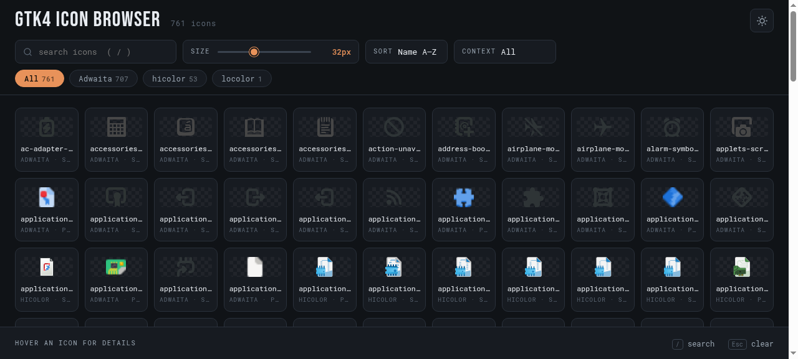

A single-file, dependency-free showcase for the GTK icon themes installed on your machine. Filter it, search it, resize it, copy icon names out of it — no build step, no runtime, no server required.
git clone https://github.com/nativeit/gtk4-icon-browser.git && bash install.sh
no sudo required
